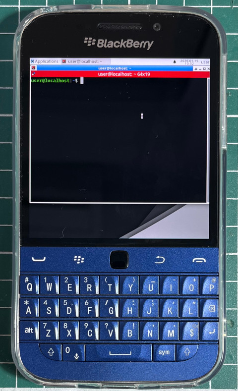

步驟如下：
1. 安裝Linux Deploy、Termux、Termux-X11
2. Linux Deploy配置
Properties: linux BOOTSTRAP Distribution: Debian Architecture: arm64 Distribution: oldstable Source Path: http://ftp.debian.org/debian Installation type: Partition Installation path: /data/block/mmcblk0p1 MOUNTS="/data/data/com.termux/files/usr/tmp:/tmp" SSH Enable: Checked
3. 安裝Busybox到/data/adb/modules/playstore/system/bin
4. 手動修復安裝問題
127|elish:/ $ su
127|elish:/ # mkdir /data/tmp
127|elish:/ # mount /dev/block/mmcblk0p1 /data/tmp/
127|elish:/ # mount --bind /dev /data/tmp/dev/
127|elish:/ # mount --bind /dev/pts /data/tmp/dev/pts
127|elish:/ # mount --bind /sys /data/tmp/sys
127|elish:/ # mount --bind /proc /data/tmp/proc
127|elish:/ # chroot /data/linux
# export PATH=$PATH:/bin:/usr/bin:/usr/sbin
# bash
root@localhost:/# passwd root
root@localhost:/# mkdir -p /tmp
root@localhost:/# apt --fix-broken install
root@localhost:/# vi /etc/apt/sources.list
deb http://deb.debian.org/debian bookworm main contrib non-free non-free-firmware
deb http://deb.debian.org/debian bookworm-updates main contrib non-free non-free-firmware
deb http://deb.debian.org/debian bookworm-backports main contrib non-free non-free-firmware
deb http://archive.debian.org/debian/ buster contrib main non-free
root@localhost:/# apt-get update
root@localhost:/# apt-get install vim sudo openssh-server x11-xserver-utils
root@localhost:/# apt-get install xfce4 xfce4-goodies dbus-x11
5. 開啟Termux-X11
6. 開啟Termux並且執行如下命令：
$ cd
$ vim ../usr/bin/cli
#!/system/bin/sh
if [ `whoami` != "root" ]; then
echo "run me as root"
exit
fi
termux-x11 :0 -ac &
/data/data/ru.meefik.linuxdeploy/files/bin/linuxdeploy -p linux start -m
ssh xxx@127.0.0.1
/data/data/ru.meefik.linuxdeploy/files/bin/linuxdeploy -p linux stop -u
$ chmod a+x ../usr/bin/cli
$ su
# chown yyy:yyy /data/data/com.termux/files/usr/tmp
# exit
$ cli
xxx@localhost:~$
xxx@localhost:~$ sudo chown xxx:xxx /tmp
xxx@localhost:~$ DISPLAY=:0 startxfce4
P.S. xxx是Debian使用者，yyy是Android使用者
7. 移除/data/adb/modules/playstore/system/bin下的Busybox檔案
完成
